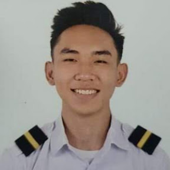

ProjectElysium |
Altforge Studios |
AxiomCreatives |
About me
Aron Carl M. Awid
Contact Details
Email address: awidaron@gmail.com
Contact Number: 09603099549

EDUCATION
Airlink International Aviation College, Inc.
2019-2023
Bachelor of Science in Aviation Major in Flying
Undergraduate with complete Academic Requirements
Divine Light Academy, Bacoor - Senior High School
2017-2019
Science, Technology, Engineering, and Mathematics
With Honors
Divine Light Academy, Bacoor - Junior High School
2013-2017
WORK EXPERIENCE
AxiomCreatives
August 2024 - Present
Freelance Full-Stack WebDeveloper | Graphic Designer | Game Developer
- Designing UI/UX for use in website
- Developing games using Unreal Engine 5
- Making models and assets for use in Unreal Engine 5
- Communicating to international clients and handle future engagements
Altforge Studios
January 2023 - August 2023
Freelance Full-Stack Game Developer
- Handling server-side issues such as problems with performance issues.
- Implementing a more efficient multiplayer integration.
- Coding player and AI logic that can be integrated through different projects.
- Creating and animating game assets as well as coding and implementing them to the server.
Project Elysium
December 2021 - August 2022
Freelance Graphic Designer | Project Team Leader
- Leading two teams with different tasks and functions such as modeling, animating, designing, and other related
graphic design processes in order to achieve efficient results.
- Distributing workloads properly to their appropriate groups to make sure the tasks are aligned with each member's
skill sets to maximize productivity within the team.
- Directly communicating with global clients to propose and handle current and future engagements.
- Creating game assets and licenses for clients.
Creotec Philippines, Inc.
September 2018 - October 2018
Work Immersion
- Handling machine components with proper diligence in a fast-paced production environment.
- Distributing work and tasks across several departments in the company under the guidance of Work Immersion
Supervisor.
SKILLS AND EXPERTISE
Skills
- Time Management
- Problem Solving
- Leadership
- Adaptability
- Project Management
Communication Skills
-
Written English Language
-
Spoken English Language
Expertise
Other Information
Birth date: August 4, 2001
Civil Status: Single
Religion: Roman Catholic
Language: